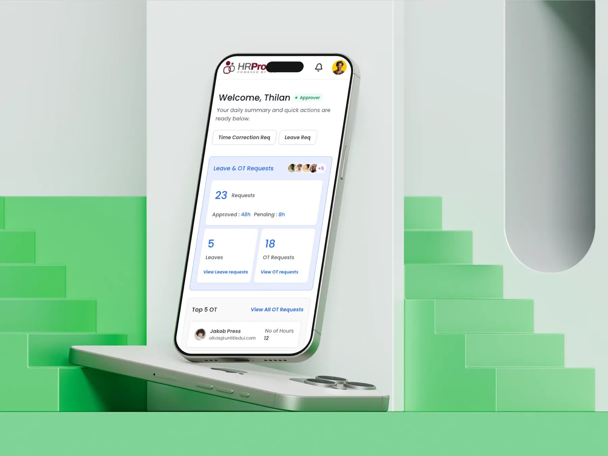
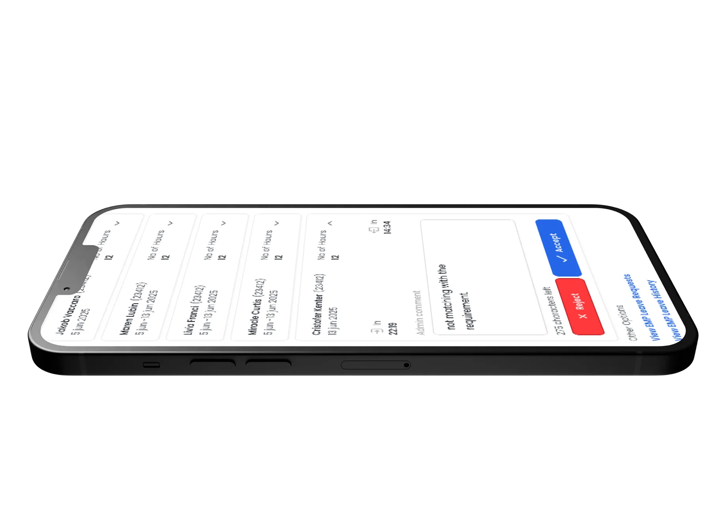
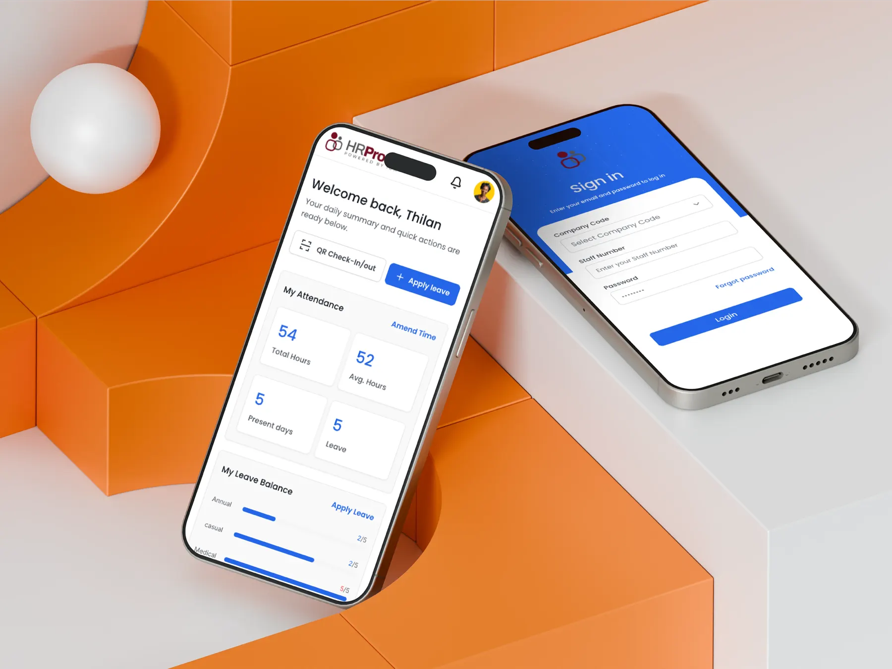

IOM World.
Leave, overtime and attendance in one secure app. Designing a workforce tool that non-technical staff actually use.

The problem
Leave, overtime and attendance were handled manually, which caused delays, inconsistent records and slow approvals.
The solution
A mobile app where employees request leave or overtime in a few taps, sign in with location-checked face recognition, and managers approve from one list.
The impact
Clear + secure
The client reported better management of attendance, leave and overtime, with stronger security.
I designed the complete UI/UX, worked with the team to integrate AI-based location and face recognition, and built front-end components aligned with the selected theme.
Keep security invisible. Face and location checks run as one quick moment, so employees experience a simple sign-in.
Employee and manager mobile flows: home summary, leave and overtime requests, approvals, attendance dashboard and notifications.
The decisions behind the experience
See the interface. Follow the decision.

Answer “where is my request?” on the home screen
Balances and pending requests up front.
Read the decision
Approve or reject from one list
Requests stop waiting in inboxes.
Read the decisionResearch, exploration, and what I learned↓
Every request touched three people and a spreadsheet.
Employees filled in requests, managers approved them later, and HR reconciled attendance by hand. Data arrived slowly and often didn't match.
The new system had to stay accurate, secure and compliant with company policy, while working for employees who are not technical.
If sign-in felt slow or invasive, staff would avoid it, and the data would be no better than before.
- Location-based face recognition for attendance
- Several leave types, each with its own approval chain
- Simple enough for non-technical users
- Real-time validation and data privacy
Face recognition sounded like a barrier. Designed well, it became the fastest way in.
I researched enterprise HR systems, AI attendance tools and the pain points in the existing manual process. Security features tend to fail when they feel like extra work.
So the check was designed as a single moment with clear feedback, instead of a multi-step security form.
Security needs explanation
Biometric features need clear consent and clear error states. The happy path stays short; the recovery path stays obvious.
Security succeeds when people barely notice it.
What shaped the interface.
Status at a glance
The home screen summarises leave balance and pending requests, so employees rarely need a menu.
Approvals in one list
Managers see each request with approve and reject side by side, cutting the time a request waits.
Notify at every change
Employees hear when a request is approved, rejected or needs action, which removes follow-up messages.
From requirements to a working model.

Faster requests, cleaner data, stronger security.
The client reported that the system greatly improved how they manage attendance, leave and overtime.
Figures describe the scope of the design work. Measured results will be added as they become available.
The UI is clear and easy to use, and the AI-based face recognition with geo-location adds a strong layer of security.

Operations Manager, IOM World
Security features succeed when users barely notice them. I design the happy path first, then the clearest possible error states.